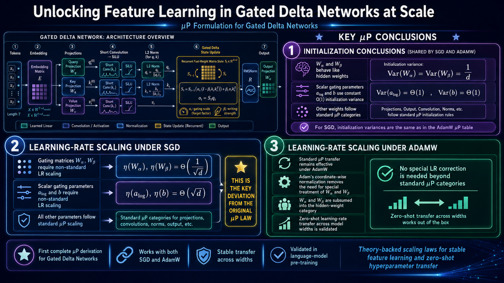

Unlocking Feature Learning in Gated Delta Networks at Scale
Unlocking Feature Learning in Gated Delta Networks at Scale

大型语言模型的训练与扩展对计算资源有着极高的需求，这促使人们积极探索高效的亚二次复杂度架构以及具备理论基础的超参数调优方法。
尽管“最大更新参数化”（Maximal Update Parametrization，简称 μP）已成功实现了标准 Transformer 模型的零样本超参数迁移，但将其推广至线性模型——尤其是那些具备结构化状态转移与复杂架构的模型——这一领域目前仍鲜有人涉足。
通过在正向传播、门控机制以及循环状态动态演化过程中，对各坐标维度的尺度估计进行严格推导与传递，我们成功推导出了“门控 Delta 网络”（Gated Delta Network）的尺度缩放规则。
语言模型预训练实验结果证实：在 AdamW 和 SGD 两种优化器下，我们所配置的参数化方案均能实现跨模型宽度的学习率稳定迁移；相比之下，标准的参数化方案则无法实现此类迁移。这一结果有力地验证了我们理论分析的正确性及其在实践中的有效性。
Training and scaling Large Language Models demand enormous computational resources, motivating both efficient sub-quadratic architectures and principled hyperparameter tuning methods.
While the Maximal Update Parametrization (μP) has enabled zero-shot hyperparameter transfer for standard Transformers, its extension to linear models, particularly those with structured state transitions and complicated architectures, remains largely unexplored.
By rigorously propagating coordinate-size estimates through the forward pass, gating mechanisms, and recurrent state dynamics, we derive the scaling rules for Gated Delta Network.
Experiments on language-model pre-training confirm that our configurations enable stable learning-rate transfer across model widths under both AdamW and SGD, whereas standard parametrization fails to transfer, validating the correctness and practical utility of our analysis.